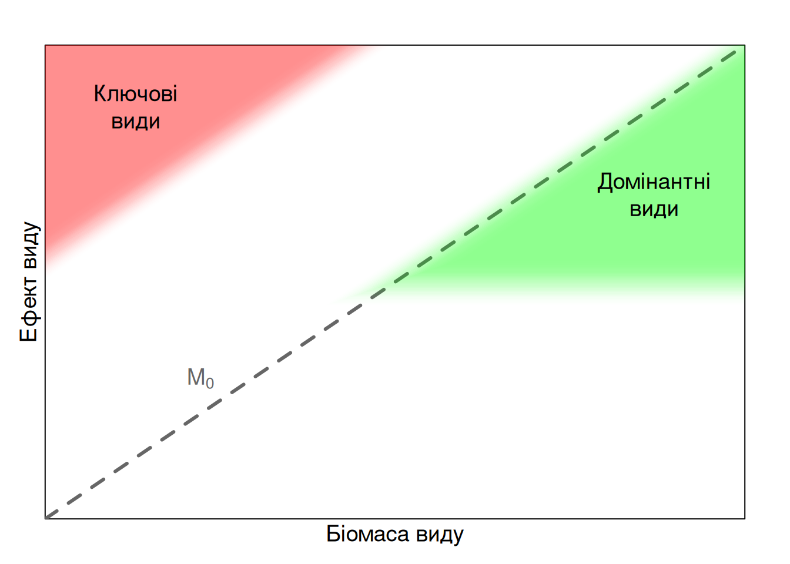

5.3 Ключові види
5.3.1 Щодо морських зірок
В попередніх розділах ми розглянули трофічні мережі як цілісну систему і трофічну мережу з погляду окремого виду (елтонівську нішу). Пригадайте приклад із каланом морським: ці ссавці обожнюють їсти морських їжаків, в той час як морські їжаки обожнюють їсти гігантські морські водорості. Масове виїдання бурих водоростей морськими їжаками спричиняє зміни цілих ландшафтів91, а оскільки велетенські зарості водоростей утворюють середовище існування для багатьох інших видів, то це змінює цілі екосистеми. Дуже легко помітити неспіврозмірність ефектів каланів до їх розміру: так, звісно, це доволі великі видри, але що таке пару видрочок відносно масштабів цілих прибережних екосистем? Спорадична присутність декількох каланів має непропорційно значний ефект для переходу морських екосистем між підводними лісами і голим субстратом.
В 1960-х роках, такий собі Боб Пейн (Robert “Bob” T. Paine) досліджував угруповання морських безхребетних міжприливних зон у штаті Вашингтон на тихоокеанському узбережжі США. Це доволі скелисті середовища притаманні західному узбережжю (як на Рис. 5.7, тільки холодніше), а міжприпливна зона (intertidal zone) відповідає такому поясу узбережжя, що затоплюється водою під час припливу але осушується під час відливу. Припливи-відливи повторюються двічі на день, і міжприпливна зона створює доволі цікаве й жорстке середовище для морських мешканців, адже двічі на день вони опиняються поза водою. Не всі можуть пристосуватись до таких умов, і постійні зміни рівня води створюють помітну конкуренцію між організмами, однак угруповання міжприпливних зон все ж існують і навіть мають певне різноманіття та продуктивність.
Пейн цікавився трофічними мережами, елтонівським підходом до екологічної ніші, теорією співіснування, та феноменом біологічного різноманіття в екосистемах. Однак, він не був теоретиком, а радше намагався дослідити ці поняття через польові експерименти. В своїй знаковій статті, Пейн (1966) запропонував формальне пояснення чому різноманіття існує за умов конкурентності та конкурентного виключення: “локальне різноманіття видів прямо пов’язане із ефективністю, з якою хижаки запобігають монополізації значних ресурсів середовища одним видом”. У своїй роботі Пейн розглядав підмережі (subwebs) – такі підмножини локальних трофічних мереж, що об’єднані одним верхівковим хижаком. У випадку тихоокеанського узбережжя, таким верхівковим хижаком була морська зірка Pisaster ochraceus, котра харчується переважно морськими жолудями (вусоногими Cirripedia), двостулковими молюсками, панцирними молюсками, морськими блюдцями (теж молюски, Patellogastropoda). Іншим хижаком в цій системі є морський черевоногий молюск Nucella emarginata, котрий харчується морськими жолудями та двостулковими молюсками, однак Pisaster може іноді полювати на Nucella.
Як дослідити роль хижака в такій екосистемі? Пейн би сказав, що елементарно – давайте просто подивимось що станеться без морських зірок. Експеримент Пейна являв собою класичний експеримент із вилучення (removal experiment): він взяв дві ділянки в міжприпливній зоні розміром 8×2 м: одну він використав як контроль, а в другій він вручну, день за днем, протягом місяців вилучав дорослих морських зірок. Вже за декілька місяців за відсутності хижака більшість ділянки зайняли морські жолуді Balanus із іншими асоційованими видами, пізніше ділянку захопили мідії Mytilus та морські жолуді Pollicipes, і вже за рік Mytilus зайняли майже всю площу із невеликими вкрапленнями Pollicipes; єдиними рослинами в цій екосистемі стали епіфітні водорості, що росли на мушлях цих двох видів. Ціла екосистема змінилась після видалення єдиного виду хижака, і кількість видів в цій екосистемі радикально зменшилась (Рис. 5.14).
) із використанням іконок з Canva).](images/pisaster.png)
Рис. 5.14: Експеримент Боба Пейна в міжприпливній зоні скелястого узбережжя у Вашингтоні полягав у послідовному й постійному видаленню морської зірки Pisaster ochraceus із угруповання безхребетних. За декілька місяців після початку експерименту морські жолуді Balanus glandula, вивільнені з-під тиску хижацтва морської зірки, займали 60-80% площі, а за рік структура угруповання змінилась до суцільного домінування мідій Mytilus та морських жолудів Pollicipes. (За Paine (1966) із використанням іконок з Canva).
Із цього експерименту можна зробити цілком логічний висновок щодо регуляції згори-донизу, адже динаміка екосистеми очевидно залежить від вищих трофічних рівнів. Однак Пейн на цьому не зупинився і вже за декілька років видав в журналі The American Naturalist ще одну дуже коротку але надзвичайно знакову статтю – “Зауваження щодо трофічної складності та стабільності угруповання” (1969). В ній від наслідує МакАртура у висновку що кількість вузлів у трофічній мережі прямо пов’язана зі стабільністю екосистем, однак критикує останнього у тому, що стабільність не має чіткого визначення. На його думку, задля оцінки стабільності можна використовувати таксономічну структуру угруповань – адже якщо угруповання нестабільне, з часом можна спостерігати зміни щільностей популяцій і зміни комбінацій видів. Однак це не дає уявлення щодо ефектів пертурбацій і відтак два угруповання можуть виглядати однаково під дією різних збурень, у випадку чого ми помилково вважатимемо їх стабільними (адже змін нема!). Натомість, Пейн підіймає питання дослідження здатності угруповань чинити спротив пертурбації92, і що може визначати нестійкість екосистем. В якості прикладів він навів власні експерименти із Pisaster, а також випадки катастрофічного виїдання коралових рифів в Океанії іншим видом морської зірки Acanthaster planci після того, як під тиском туризму та надмірної експлуатації зникав природній хижак морської зірки, великий морський гастропод Charonia tritonis. В останньому випадку, здавалось би, екосистеми коралових рифів знамениті своїм біорізноманіттям і ми б очікували що багаті на види екосистеми мали б бути неймовірно стабільними, однак це не заважає Acanthaster винищувати коралові рифи із всіх їх різноманіттям. Із цього Пейн зробив висновок, що стабільність екосистем мусить регулюватись згори-донизу трофічними каскадами завдяки верхівковим хижакам—як-то Pisaster та Charonia—котрих він освятив ключовими хижаками.
5.3.2 Хто є ключовим видом
Невдовзі після виходу статті Пейна термін ключовий вид (keystone93) став активно використовуватись в охороні природи. І Pisaster, і Charonia є доволі цікавими прикладами, адже їх фонові чисельності (чи біомаси) в здорових екосистемах не є значними, однак ефект їх присутності на різноманіття є непропорційно помітним. Відтак, ключовими видами є такі види, ефект яких на екосистему є непропорційно значним відносно їх чисельності та/чи біомаси.
Отже, для визначення чи вид є ключовим необхідно обчислити його частку участі в угрупованні (наприклад, яка частка біомаси всього угруповання припадає на цей вид) і його ефект на екосистему. За нульового припущення, ефект видів на екосистему повинен бути прямо пропорційним до його частки біомаси (пунктирна лінія \(M_0\) на Рис. 5.15) – таке припущення відповідає поглядам масового ефекту (mass-effect), коли ми пояснюємо динаміку системи динамікою найбільш чисельних її елементів. Часто, динаміка й характеристики екосистеми можна пояснити найбільш чисельними, або домінантними видами (dominant species). Наприклад, можна погодитись що угруповання в букових пралісах існують завдяки, власне, старим деревам буку європейського Fagus sylvatica – виду, котрий має найбільшу біомасу в цій екосистемі. За визначенням, бук європейський не є ключовим видом, адже його (значний) ефект на екосистему пропорційний його (значній) біомасі.

Рис. 5.15: Визначення ключових видів вимагає їх ефект на екосистему непропорційно більший від їх частки участі в угрупованні – їх фонова чисельність чи біомаса повинна бути незрівнянно малою порівняно із впливом на стабільність системи. Цим ключові види відрізняються від домінантних. Пунктирна лінія визначає нульове очікування (\(M_0\)) до ефекту видів залежно від їх частки участі. (За Power et al. (1996)).
Але як визначити ефект виду? Якщо біомасу чи будь-яку іншу проксі-метрику частки участі в угрупованні обчислити відносно нескладно, то визначити ефект виду стає помітною перешкодою у визначенні чи вид є ключовим (Power et al. 1996). Павер та інші, включно із тим же Пейном, Девідом Тілманом94, та Джейн Любченко95 запропонували (1996) поняття важливості виду в угрупованні (community importance) як зміну певної характеристики угруповання зі зміною чисельності виду (ідея подібна до поняття чутливості в моделюванні). У якості характеристики угруповання можуть стати в нагоді такі метрики, як первинна продуктивність, інтенсивність обігу поживних речовин, чи видове різноманіття. Оскільки точні експериментальні маніпуляції чисельністю видів можуть бути логістично складними, важливість виду можна також оцінити завдяки експериментам із видалення, що і робив свого часу Пейн із морськими зірками.
Незручним наслідком такого підходу є те, що формально неможливо оцінити чи вид є ключовим без трудомістких експериментів із видалення. Наприклад, якщо у вашому угрупованні є сотня видів, це означає що необхідно провести сотню окремих експериментів із вилучення одного виду та спостереження за динамікою екосистеми без цього виду, аби потім порівняти важливість кожного виду із їх біомасою. В літературі виглядає, що частіше обирають окремий вид, який підозрюють в їх “ключовості”, і тоді проводять лише один експеримент: так, наприклад, виявили, що окрім морських зірок та гігантських морських равликів ключовими видами можна назвати калана морського Enhydra lutris із їх ефектом на морських їжаків які виїдають бурі водорості (Estes and Palmisano 1974), бобра Castor canadensis котрий своєю діяльністю змінює вигляд ландшафтів і цикли поживних речовин (Naiman et al. 1986), чи вовка Canis lupus який контролює популяції рослинноїдних копитних та, відтак, первинну продуктивність рослин (MacLaren & Peterson 1994), з-поміж інших (Bond 1994, Power et al. 1996). У всякому разі, емпіричний доказ того, що ключовий вид є ключовим, вимагає обережного аналізу та формального тестування співрозмірності ефекту до біомаси виду.
Із сучасними можливостями комп’ютерного аналізу, втім, в пригоді можуть стати трофічні мережі. Із матеріалу вище повинно бути очевидно, що ключові види стають ключовими завдяки їх позиції в трофічній мережі: зокрема, оригінальний аргумент Пейна щодо ролі Pisaster в регуляції угруповання безхребетних полягав в тому, що цей вид є верхівковим хижаком, котрий контролює багато інших видів і не жодному окремому виду домінувати. Відтак, за наявності інформації щодо трофічних зв’язків в системі і передачі речовини чи енергії між видами, моделювання змін в структурі угруповання за зміни чисельності чи локального вимирання окремого виду можуть запозичити непогану альтернативу трудомістким експериментам із вилучення. Зокрема, оцінка кількості трофічних зв’язків утворених видом і його “центральність” в контексті мережі є ефективними метриками в ідентифікації ключових видів (Jordán 2009) і непоганим прикладом застосування поняття елтонівської ніші в прикладних питаннях.
5.3.3 А хто не є ключовим видом
“Трактувань, що таке ключовий вид, може бути багато <sic!>, залежно від мети досліджень: екологічне, охоронне, економічне, соціальне та інші”
Трактування ключового виду згідно з його чітким визначенням може бути тільки одне: це види із непропорційно значним ефектом на екосистему до їх біомаси (або іншої метрики частки участі в угрупованні). Оскільки ефект ключових видів значний і їх зникнення майже напевне супроводжується катастрофічими наслідками для екосистем, такі види види варто зробити пріорітетними в охороні природи. На жаль, із неймовірною важливістю цього поняття в охороні природи, із часом почала виникати помітна плутанина в літературі, і наразі ледь не кожен вид можуть назвати ключовим (Piraino & Fanelli 1999). Наприклад, вище було згадано, що в букових пралісах бук є не ключовим, а домінантним видом, що могло викликати певний дискомфорт у людей, котрі переживають за ці неймовірні екосистеми. Це не означає що старі буки не потрібно охороняти – однак, все ж, бук в букових пралісах не вписується у визначення.
Коли рука тягнеться назвати якийсь вид ключовим, варто зупинитись і задуматись, чому так. Можливо, існує інший адекватніший термін для такого виду. Свого часу Ден Сімберлов96 підняв це питання і формально визначив наступні терміни (1998):
Індикаторні види (indicator species) – такі види, присутність або чисельність яких може допомогти у визначенні якісних станів середовища. Використання індикаторних видів ґрунтується на припущенні, що їх динаміка відображає динаміку інших видів в угрупованні чи певних фізико-хімічних особливостей середовища. Класичним шкільним прикладом можуть слугувати лишайники, адже широко вважають що лишайники чутливі до забруднення повітря і їх присутність вказує на середовище вільне від забруднень (варто зазначити, що такий умовивід варто застосовувати для конкретних видів на кшталт Lobaria, а не будь-яких лишайників в принципі). З таким підходом варто зважати на потенційні коваріати поширення індикаторних видів (якщо ви не спостерігаєте Lobaria в степових екосистемах, то може це не через забруднення повітря, а чере відсутність придатного субстрату?). До того ж, в літературі відсутній консенсус щодо того, що індикаторні види повинні індикувати.
Види-парасольки (umbrella species) – це такі види, чиє збереження побічно також призводитиме до збереження інших видів та/чи їх середовища існування. Передумовою того, що вид розглядається як парасолька, може бути як його специфічні вимоги до умов середовища (“збереження очеретянки прудкої Acrocephalus paludicola автоматично вимагатиме збереження чутливих заплавних лук на Поліссі”), так і, навпаки, широкі вимоги (“якщо внести чайку Vanellus vanellus до Червоної книги, то ми автоматично заповідатимемо всі лучні екосистеми”). Поняття виду-парасольки не має значного стосунку до екології, але може бути неймовірно ефективним інструментом для охорони природи, якщо такий вид обрано вдало і його охорона викликає суспільний інтерес. Відтак, наукові дослідження для ідентифікації видів-парасольок є другорядними, а більш важливим стає ефективний менеджмент і вдалий вибір цільового виду.
Харизматичні види (charismatic species) – це види, що мають чималий суспільний інтерес, і їх ефективна охорона стає наслідком цього інтересу. Первинний фактор суспільного інтересу може бути нерелевантним—наприклад, представники харизматичної мегафауни (charismatic megafauna) на кшталт слонів чи рисей в певних країнах мають релігійну чи міфологічну роль, а орлан білоголовий Haliaeetus leucocephalus охороняється американцями переважно бо ж це символ США,—але похідна суспільна підтримка стає незамінною в досягненні природоохоронних цілей. Окремі природоохоронні програми можуть ідентифікувати конкретні види-символи (flagship species), як-то бізон європейський (Bison bonasus), кінь Пржевальського (Equus przewalskii), чи лелека чорний (Ciconia nigra). Мабуть, окремим напрямком, який варто розвивати в суспільній площині є офіційні види-символи країн, регіонів, чи інших адміністративних одиниць: наприклад, в США та Канаді більшість штатів/провінцій мають офіційних птахів-, риб-, рослин-, комах-, ссавців-символів штату, котрі в конституційному порядку затверджуються легістратурою.
До таких визначень, окрім ключових видів та домінантних видів розглянутих вище, варто також додати не стільки менеджмент-, скільки екологічно-фокусовані пов’язані поняття:
Фундаційні види (foundation species) – поняття, майже тотожне домінантним видам, яке позначає такі види, присутність яких визначає структуру угруповання, переважно завдяки створенню оптимальних умов середовища для інших видів. Формально їх можна визначити як просторово домінуючі види, котрі структурують середовище (Borst et al. 2018). В якості прикладів можна навести той же бук в букових пралісах, коралові рифи (хоча то, радше, є цілими кластерами видів), чи гігантські бурі водорості.
Екосистемні інженери (ecosystem engineers) – це такі види, що своєю життєдіяльністю значним чином змінюють локальне середовище, чим створюють придатне середовище для комплексів інших видів.
Звісно, один вид може носити декілька капелюхів, і щодо перетину цих термінів варто бути обережними. Наприклад, бобри Castor—як євразійський C. fiber так і американський C. canadensis—є екологічними інженерами, адже спорудження загат кардинально змінює гідрологію ландшафтів, однак це ще й впливає на формування середовища існування інших видів, затримання поживних речовин й води в екосистемі, і, отже, робить бобрів ще й ключовими видами97. В цілому, всяким науково-орієнтованим природоохоронцям варто провести чітку лінію в тому, чи варто охороняти вид через те що він (1) має значну екологічну роль, як-то ключовий вид чи екосистемний інженер, (2) вимагає охорони суто через соціальні фактори й менеджмент, як воно буває з харизматичними видами та видами-парасольками, чи (3) йому просто-напросто загрожує вимирання через зменшення чисельності чи зникнення природного середовища, однак його роль на екосистеми невизначена чи нею можна знехтувати.
Чи, радше, морськшафтів, адже слово “landscape” описує сушу (land) а не воду – для чого існує слово “seascape”.↩︎
В контексті здатності угруповань чинити спротив пертурбаціям варто згадати два пов’язані поняття, котрі я наразі не планую зачепити в цьому підручнику, але які варто мати на увазі: стійкість та опір (резистентність). Стійкість (resilience) відповідає здатності системи до повернення до початкового стану після збурення (Holling 1973). Натомість, опір (resistance) описує здатність системи залишатись незмінною під дією зовнішніх збурень. Обидва терміни часто плутають в літературі (із додачею декількох інших слів), тому до них варто ставитись із обережністю і чітко визначати при застосуванні (Grimm & Wissel 1997).↩︎
Буквально, “keystone” перекладається як ключовий камінь. Цей термін було запозичено із архітектури (замковий камінь), де він позначає клиноподібний камінь у вершині арки. Такий камінь тримає стискальне навантаження структури; подібно до екосистем, його видалення спричинить обвалення арки.↩︎
Народжений під ім’ям David Titman, однак змінив прізвище на Tilman (вчіть англійську аби зрозуміти чому), цей еколог став надзвичайно популярним завдяки розвитку теорії поділу ресурсів та масштабним експериментальним дослідженням впливу різноманіття угруповань на продуктивність екосистем. Ми ще повернемось до цього імені.↩︎
Jane Lubchenco, з-поміж іншого, має українське коріння, і відома завдяки роботі в сфері сталого розвитку та наукової комунікації. Із роботою професора в Державному Університеті Орегону, вона протягом своєї кар’єри успішно поєднувала позицію голови Національної Океанічної та Атмосферної Адміністрації (NOAA) та інші високі посадові позиції.↩︎
Daniel Simberloff – аспірант соціобіолога Едварда Вілсона (E.O. Wilson), котрого ми згадаємо в контексті теорії острівної біогеографії МакАртура-Вілсона. Сімберлов прославився тим, що цю теорію експериментально перевірив, а пізніше мав чималий вклад в практичне застосування її в охороні природи.↩︎
В сучасній польській культурі, мабуть, можна назвати бобрів ще й харизматичним видом.↩︎